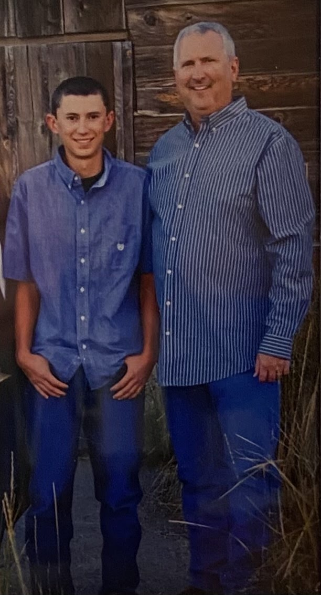
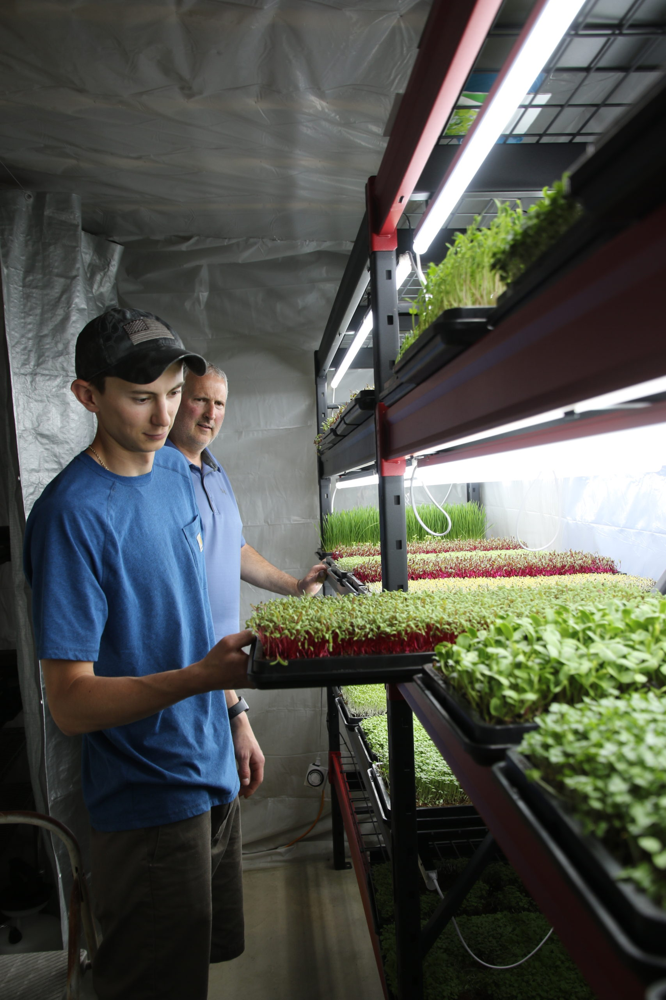

About Us
"Your Local Modern Farmer"
Founded by Ryan Calkins and his oldest son Dylan Calkins. Our small business is family founded and family run.
Calkins’ Greens first started when Ryan started watching and learning about microgreens online. He introduced Dylan to the idea of microgreens while he was visiting home on summer leave from the Army. They both loved the idea and started making plans to start the business.
However, Dylan had to go on a training deployment for the Army in South Korea in the beginning of 2020. This gave Calkins’ Greens time to plan and learn more before starting the business. After a lot of very late night calls for Dylan with Ryan they were ready to start growing.
Farmers you can trust
At Calkins’ Greens we make sure to grow our microgreens in a air control environment to ensure that disease or mold do not affect our plants. Our grow room has a heater, fans, dehumidifier and, is closed off to keep the climate controlled.
Our microgreens are grown on food safe plastic and never sprayed with harmful chemicals, so that when you eat our delicious greens you know you are only receiving the right nutrition.
Calkins’ Greens does not only produce great tasting microgreens but, we also make sure we do it the right way. Our plants are tended to multiple times a day and our areas are cleaned at the end of everyday.